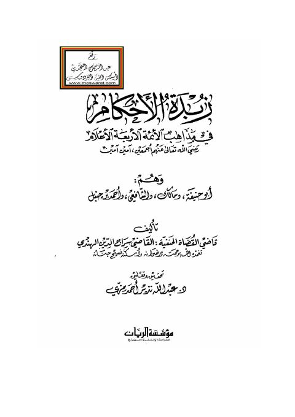

Downloads need an internet connection.
زبدة الأحكام في مذاهب الأئمة الأربعة الأعلام رضي الله تعالى عنهم أجمعين
Authors: سراج الدين الهندي
Editors: عبد الله نزير أحمد رمزي
Publishers: مؤسسة الريان
**▫️ العنوان: زبدة الأحكام في مذاهب الأئمة الأربعة الأعلام رضي الله تعالى عنهم أجمعين** ▪️ المؤلف: #سراج_الدين_الهندي ▫️ المحقق: #عبد_الله_نزير_أحمد_رمزي ▪️ الناشر: #مؤسسة_الريان ▫️ تاريخ النشر: 1422هــ 2001 م ▪️ بلد النشر: بيروت، #لبنان ▫️ الطبعة: 1 ▪️ عدد الأجزاء: 1 ▫️ الصفحات: 203 ▪️ نوع الوعاء: #كتاب ▫️ التصنيف الرئيسي: #الفقه_وأصوله ▪️ التصنيف الفرعي: #بحوث_ومسائل ۪